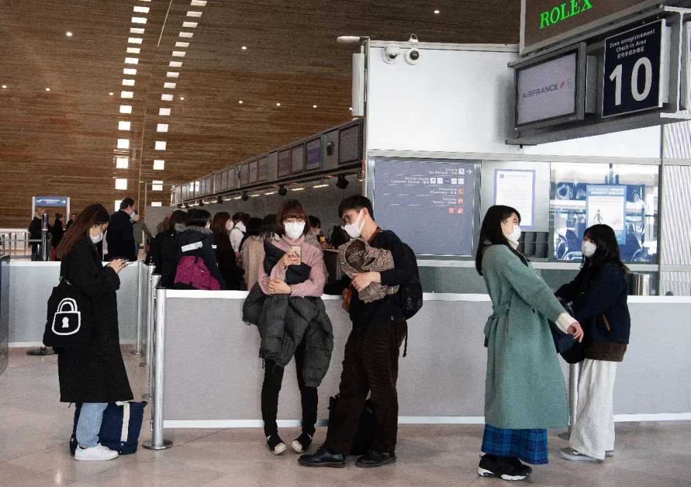
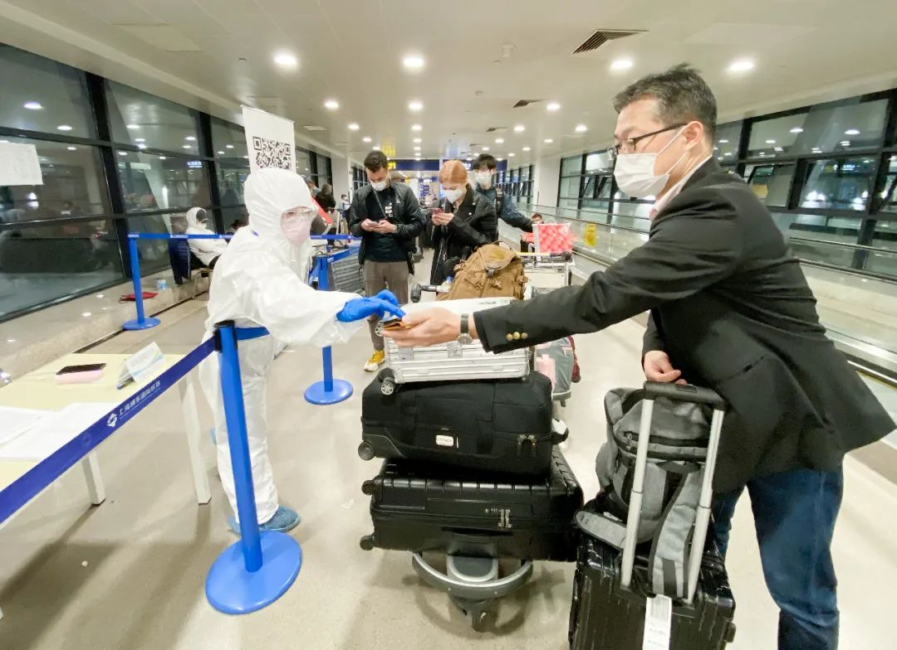
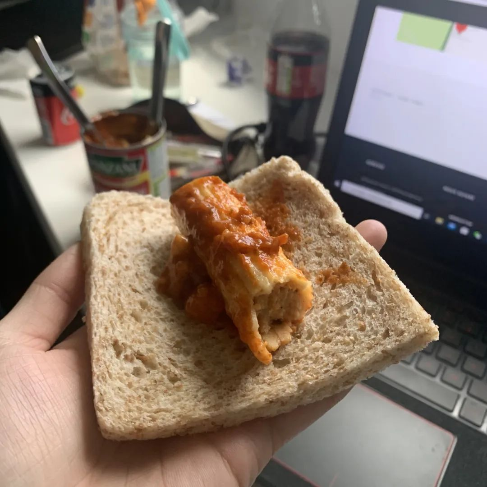
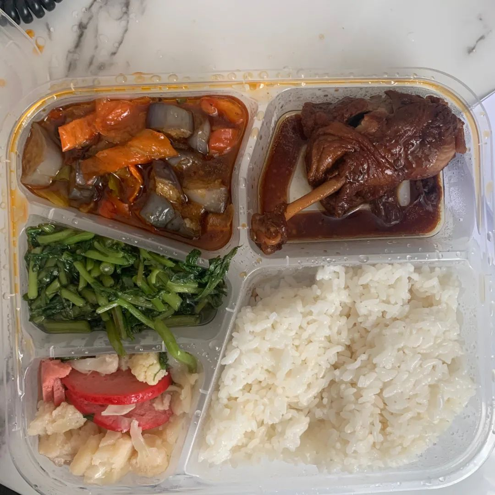

8名留学生讲述：“逃”回国内，我们太难了
原文链接 备份链接 《小酒馆》，是燃财经旗下的故事栏目，真人真事，讲述创新经济时代的人生百态。本文为第35期。 作者 | 金玙璠 孟亚娜 陈琪 编辑 | 魏佳 “新冠疫情，中国打上半场，世界打下半场，华人留学生打全场”。这虽然是一句调侃， …
回国前那几天，小金吃饭呛到咳嗽都会紧张，“每天都要量好几次体温，不想把病毒带到国内”
本文首发于南方人物周刊
文 | 本刊记者 徐梅
编辑 | 周建平 rwzkjpz@163.com
全文约6001，细读大约需要13分钟

3月13日，法国戴高乐机场，戴口罩的旅客在2E航站楼等候 图 / 新华社
“真的一定要回去吗？不惜一切代价，折腾半天，劳神伤财，也一定要回去吗？”
小金有些迷茫，但似乎已无退路，“好在师姐很坚定，我们一路上不管遇到什么，听到什么，她只有两个字，‘回家’！”
师姐楚楚和小金都是武汉人，高中毕业就来到法国留学，小金出国时不到18岁，独自在海外已经两年了，楚楚只比她大一岁。
据联合国教科文组织统计，中国已是世界最大的留学生生源国。2017年中国出国留学人数首次突破60万。教育部2019年公布的出国留学数据显示，2018年出国留学人数在上年基础上再增5.37万人，增长8.83%。相关机构分析表明，留学生大多来自普通工薪家庭，留学在我国已逐渐常态化、平民化、低龄化。
3月19日下午6点35分，小金和楚楚乘坐的航班降落在上海浦东机场，防控境外疫情输入的流程非常严格，加上到港人多分流压力大，待小金走进指定的隔离酒店房间，已是次日凌晨7点。
从法国东大区南锡市，到卢森堡大公国，再到德国法兰克福，经中国台北转机，最终抵达上海，两个姑娘用了四天时间，而这样的辗转归程是疫情在全球暴发后，大量海外留学生和华人曲线归国的典型路线。
3月22日，在上海浦东一家酒店隔离的小金接受了《南方人物周刊》的线上采访。楚楚住在她的楼上，她们将在这里完成14天的隔离，再按照相关管理规定和流程，返回刚刚从停摆中复苏的家乡武汉。

3月19日，上海浦东国际机场，工作人员核实入境人员信息 图 / 新华社
“中国湖北人，在法国‘湖北’”

小金的妈妈高女士早在女儿启程回国前已向所在的社区报备，“国家保护我们，我们一定要遵守国家的规定。”高女士在微信上再三提醒孩子，一路上做好防护，到达上海后，要遵守当地防控规定。
3月19日晚，高女士把手机放在枕头边，“碎片睡眠”，直到小金第二天早晨发来酒店房间的短视频，她才安心。高女士是一名武汉本地医护，自愿报名去了金银潭ICU病区支援。武汉疫情暴发之初，防护物资缺乏，小金在网上从美国买了200个医用N95口罩寄回武汉，“那时候孩子牵挂我，后来，我担心她。”
小金在春节期间格外忧心，“我每次跟妈妈通过电话后都忍不住要哭，但她总是那么有信心，说情况一定可以控制住的。”
小金通过微信和新闻对国内抗疫一直保持着关注，“我知道这一切好转起来有多难。”母亲的坚强镇定、全国医疗队的火线驰援，是她心底的信心磐石。
欧洲疫情蔓延后，她从3月初就想回国，“湖北各地封城后，其他省市会来支援，但在欧洲，各地都是一盘散沙。”
身为医护人员的子女，她敏锐地意识到，新冠肺炎重症救治所需的专业医护和ICU设施远超常态，即便是医疗资源相对充足的发达国家，可能也无法应对疫情暴发后的病患所需。
她所在的法国东大区靠近德国，距离欧洲疫情重灾区意大利较远，但在法国疫情图上，这个区域“红得发紫”。3月22日我与小金微信采访当天，法国累计确诊14308例，东大区为3089例。
“3月初我们那里有个小城米卢斯，有一个大型教会活动，参与的大多是中老年人，其中有一个感染者。因为活动是不记名的，发现确诊者后，政府只能呼吁参与者自觉去做检查，没办法及时有效地进行流行病调查防控，整个城市后期就大暴发了。”
“中国湖北人，在法国‘湖北’，”当地留学生群里，同学们一边相互提醒要做好防护，一边开着苦涩的玩笑。
“意大利疫情暴发前正好是法国学生的冬假，意大利和法国接壤，是不少法国学生出游的第一选择。所以意大利疫情暴发时，我就非常肯定法国也会出事。”小金说网上很多人觉得海外留学生急于回家是“自己吓自己”、“过于恐慌”，但很多人不理解身处异国无法和当地人达成疫情防控共识的痛苦。小金尝试过给身边的法国朋友科普新冠病毒在传播和致病上的严重性，“他们回我一句 ，‘I don’t care！’ 还说，‘不知道你们中国人在担心什么。’”
政府宣布停课前，她的法国朋友不停给她转发戴口罩没有用的文章，“在停课后，终于意识到严重性，问我有没有多余的口罩卖给他。”
“我们所害怕的不是当时那几百个确诊病例数字，让我们不安、对未来无法作出乐观判断的，是法国人对待新冠病毒的不了解、不在乎。”

里昂学联发布的3月21日疫情地图，法国东大区疫情严重 图 / 里昂学联
停课，抢票
高女士和先生一直密切关注着法国疫情，家长们在群里也有很多交流，“孩子最开始说要回来，我们没有马上同意，那时还没有宣布停课，也担心孩子的考虑不周全，对后面的学习有影响。”
“新冠疫情中国打上场，海外打下半场，海外华人打全场”，这是网上流传甚广的一个段子。
打满全场的，还有为子女安全担忧的中国留学生家长。
回，还是不回，左思右想，进退皆忧。纠结中下不了决心的家长，组成了留学生妈妈口罩群、包机群、学校群、区域群、留守群……
2020年3月11日,世界卫生组织总干事谭德塞宣布，世卫组织评估认为新冠肺炎已具有“大流行”特征，海外新冠肺炎确诊人数跳增,有的父母来不及跟孩子商量，就帮孩子订好了回国的机票。
法国当地时间3月12日晚上8点，法国总统马克龙发表电视讲话，宣布法国所有学校从下周一停课。小金和楚楚所在的当地留学生群一下子炸开了锅，很多观望中的人迅速买了机票，订票软件上的价格翻了一番，“我马上把这个消息告诉父母，但感觉爸爸还在犹豫。我知道回国的道路必将困难重重，国内也不是所有人都欢迎我们回家，但是只有这片土地，才能让我感到踏实和安心。”
同班同学在宣布停课第二天醒来就收到了家人买好的机票，小金说虽然知道父母考虑得更多，但自己的情绪在那两天还是有些失控。
3月15日下午，群里传来即将封锁东大区和大巴黎的消息，“我意识到如果再不回去，就不知道什么时候才能走了。”
正在此时，楚楚找到她，问她“走不走”。楚楚此前因为担心回国会错过期末考试而选择了留守，接到学校取消考试的通知后，她跟家人快速作了回国的决定。
小金火速打开订票软件，独自在外打拼的阅历和敏感让她和师姐没有选巴黎作为出发地，“一是价格太贵，二是人太多风险高，三是可能封城，我们选了距离我们一个半小时的卢森堡大公国。”
她和楚楚商量一番，选了3月18日的票，因为想得到妈妈的首肯，稍微犹豫了一下，再回去看票，6000元人民币的已经卖完了，“只剩下7300的，妈妈马上给我转钱，付款成功那一刻，我心里的大石头终于落地，抑制不住心里的狂喜，半夜1点激动得叫了起来。”
小金和楚楚没有想到，她们当时在尽量减少转乘和价格可接受中平衡考量而选中的3月18日，竟会那么特别。这一天，是中国作为抗疫第一战场取得重大胜利的转折点，也是欧洲第二战场进入关键期的开始。
3月19日，据国家卫健委通报，3月18日0-24时，31个省（自治区、直辖市）和新疆生产建设兵团报告新增确诊病例34例。湖北、武汉新增确诊均为0。34例均为境外输入确诊病例（北京21例，广东9例，上海2例，黑龙江1例，浙江1例）。这是国家卫健委自1月21日起通报每日疫情以来，本土新增确诊病例首次为零。
3月18日晚上，英国首相鲍里斯·约翰逊在当晚的新冠疫情发布会上宣布，从当周五开始，除了少数关键岗位防疫一线人员、医护人员的子女和一些弱势群体儿童等可以继续上学外，英格兰的所有学校和幼儿园等教育机构全部停课，5月和6月的升学考试也被取消。
在欧洲出现“医疗挤兑”前，飞往中国的航班先出现了“航班挤兑”，机票价格陡涨，直航早已一票难求，转机则全凭运气。然而平时几千块、现在动辄上万的机票价格也不能保证留学生可以顺利返回。
小金的好朋友原本买了3月29日从英国飞中国香港的机票，后来香港政策改了，不让持湖北护照的旅客入境，他们又重新买了3月27日在埃及转机的机票，结果在3月20日，埃及的机票又通知取消了，“她打电话哭着跟我说可能要被困在英国了，因为剩下的4月之前的机票动辄十万八万，远远超出她的能力范围。”
“坐不上飞机，就要被困在卢森堡至少一个月”
小金和楚楚的航程分为几段，每一段都可能因各国各地区疫情防控政策的随时生变而险象环生。
“3月16日我们坐上去卢森堡的火车后不久，马克龙就开始了第二次电视讲话，提到关闭边境。因为信号不好，我们只能从留学生群里获取进一步的信息。”
为了确保稳妥，两个姑娘又抢了一套票（票价已经涨到了一万多），计划第二天就从卢森堡出发，以防之后卢德之间禁飞。心事重重的两人下车后乘公交先是坐反了方向，后来又因为订票太投入，提前一站下了车。
3月17日早上一起来，她们就接到了当天第一程（卢森堡飞法兰克福）航班取消的消息，“无论是再坐火车或是巴士，我们都无法在第二程（法兰克福飞台北）航班起飞之前到达法兰克福。并且因为不是联程机票，第二程机票也无法全额退款。”
“花费太多，提着行李箱跑来跑去也很累，一连串差错让我开始怀疑自己的决定，真的一定要回去吗？不惜一切代价，折腾半天，劳神伤财，也一定要回去吗？我有点迷茫，但也没有退路可走了。”
平常性格温柔的楚楚那时候却特别坚定，她的态度也鼓舞了小金，“一条心回国。”
欧盟国家之间即将关闭边境，小金和楚楚要么顺利坐上最初订的3月18日回国航班，要么被困在卢森堡至少一个月。哭都来不及了，“当时脑子里只有怎么办，没有精力去哭，因为摆在我们面前的事情真的太多了，要一件件去解决。”
重压之下，两个姑娘没有忘记按时上网课，酒店中午餐厅不开，卢森堡已进入紧急状态，周边餐厅全部关门，机场附近也没有超市。学姐从行李中找出了肉卷罐头，她俩拿全麦面包随意一卷，“一顿敷衍的午餐”之后，小金又上了四个小时的网课。

在卢森堡酒店的简易午餐 图 / 受访者提供
能否在台北顺利转机是她们最大的担忧，3月18日凌晨4点她们就去卢森堡机场办理值机，本来盘算好了，如果航班再取消或转机有问题，就买火车票去法兰克福，到那里重新买机票。“那时我们看好了一张泰国转机的可以退的票，如果我们当天的航班没问题可以顺飞，退掉那张备份的票损失也不大，但只是犹豫了一下想要确认可以退款，票就又卖完了。”
18日下午在法兰克福机场，终于拿到联程的所有登机牌时，小金和楚楚长舒一口气。
“乘坐这架航班的不是大陆人，就是台湾人，大家都很小心谨慎，全副武装。”小金和楚楚也做好了防护登上飞机，她和学姐已经两天没有好好吃饭，飞机餐上来时，俩人快速吃完，并马上更换新的口罩。“我们右前方一个二十四五岁的中国男生，从法兰克福到台北全程12小时不吃不喝，让人非常佩服。”

在卢森堡出发的时候，电子显示屏上许多航班取消，但她们飞法兰克福那班“幸存”下来 图 / 受访者提供
让两个小姐妹感动的是，她们乘坐的中华航空，专门为想要回家的中国大陆留学生开了一个微博群，群内除了中华航空官方，还有四五个台湾飞行博主，“24小时回答我们关于转机政策和机票购买方面的问题，并且积极帮助我们解决遇到的所有困难,他们没有报酬，不眠不休只为让我们顺利回家。”
各个国家和地区为疫情防控陆续取消过境签，台湾成了除了直飞以外通往大陆的最好选择，“我有很多朋友，从美国、加拿大、英国、欧洲大陆等地回国的，都买了转机台北的机票。”
但在采访小金当天，台湾宣布，自3月24日零时起至4月7日不再承载经台湾转机的旅客。小金说她有同学买的就是24日的票。

在从台北前往上海的飞机上，给妈妈报平安 图 / 受访者提供
“每顿都把隔离餐吃得光光的，炒菠菜真好吃”
从台北到上海两个小时的飞行是她们心情最轻快的一程，降落浦东机场那一刻，小金看了下时间，3月19日下午6点35分。
她马上打开手机，登陆学校网站做网课练习题，“网课分数计入总成绩，我们落地的时间刚刚好，赶上了那节课的作业时间。”
由于当天抵达的入境旅客众多，到夜里11点多，才排到她们做入境申请表检查。
“从18个重点国家和地区回来的人护照封面和申请表上都被贴上了黄色圆标。”小金如实申报了自己在法国的公寓附近300米的地方有一个托儿所，有老师感染，于是又被画上了星号。
“工作人员非常仔细，绝不漏掉一个问题。”尽管因为申报表上既有黄标又有星号，小金在体温检测后被带到测温区后方等待检查，她却没有烦躁。高女士说那时候已经是凌晨两点多，“她平常也不是很有忍耐力的孩子，我原来也担心她会抱怨，但是没有，孩子很乖，还知道说，这么多人为了我们和大家的安全在工作。”
又等了一小时，医生询问小金是否与病患有过直接接触，“我说没有，就被放走了。”
3月20日凌晨3点，小金终于坐上了去隔离酒店的小巴，半小时就到了将要入住的酒店，但被告知要在车上继续等。“前面还有七八辆车，一直等到早上6点，终于轮到了我们那辆车办理入住。”
可能是在车上吹暖风太久了，这辆车上11个乘客中只有一个体温正常，其余人体温都偏高，“我是37.4度，更高的还有38度多的，工作人员有点慌张，司机直接被吓得跑下了车，仔细想了一下可能是车内暖气太足，于是喊我们都下车，凉一凉再测。”
7点走进自己房间时，小金吃了一惊，酒店非常新，设施很好，她略略为14天的隔离费用担心。过去两天里一直戴着口罩的她，到镜子前摘了口罩，鼻梁上压出一道深深的红印子。
每天上午9点和下午3点都要量体温，有专人打电话到客房来问。头两天睡得昏天黑地地倒时差，但到了饭点还是会醒来，“盒饭我都吃得光光的，今天中午的炒菠菜真好吃。”
收费标准是在入住第二天跟午餐一起送到的，200元的住宿费和50元的餐费远低于小金的估计。

隔离餐，“菜的汤汁拌饭很好吃” 图 / 受访者提供
妈妈去金银潭医院支援一个月了，小金知道她的辛苦和压力，很多事情没有告诉她。接受我们采访的时候，她说，“在外面真的太难了。我在公交车上被法国醉汉辱骂过两次，前一次是深夜，我一个人特别害怕；第二次是白天，车上人很多，有人帮我们。”疫情暴发后，更多人流露出对华人的偏见，在这次回家的长路上，小金也遇到过这样的人。先是在从南锡去卢森堡的火车上，“上火车后我和学姐找到行李架放行李，一个法国人看到我们准备坐在这节车厢，马上收拾东西跑到两个车厢外看着我们。”
在法兰克福机场，一个身穿机场安检衬衫和工装马甲的机场安检工作人员看着她们那趟航班的大队中国面孔，先骂了一句脏话，又说“I hate them.”
“我真的特别后悔，没有录下证据，因为我的不作为，纵容了他，他以后肯定还会这样对待中国人。这是我整趟旅程中，最最后悔的一件事。”
小金注意到网上有一些针对留学生回国的骂声，“留学生被和矿泉水联系起来（3月中旬，‘女子入境被隔离非矿泉水不喝’的新闻引发热议），好像每一个回国的学生，都是那么娇气蛮不讲理的，不为国家做贡献只想着享受福利。更有甚者，直接说我们千里送毒。”小金说，“我们在外的中国人，国家有难时不眠不休四处寻找物资寄回国，心系祖国。为什么要因为一两颗老鼠屎，就给我们整个群体扣上帽子？”
小金身边的留学生说，如果出发前出现症状就不走了。有朋友会因为突然发热感冒，放弃好不容易抢到的机票，不想让任何人因为自己而被置身于危险之中。回国前那几天，小金吃饭呛到咳嗽都会紧张，“每天都要量好几次体温，不想把病毒带到国内。”
“每一个留学生背后，都有牵挂他的家人朋友，我们不是被标签化符号化的‘富二代’、‘纨绔子弟’，我们是普通的活生生的人，我们会怕死、会想家，我们不忍心伤害别人，但也没那么伟大无畏牺牲自己。这是我们软弱却真实的人性。”小金说，“疫情之下，请不要为了自保，失去爱和同理心。”


中国人物类媒体的领导者
提供有格调、有智力的人物读本
记录我们的命运 · 为历史留存一份底稿

往期精选


点击“阅读原文”即可订阅和购买最新杂志
原文链接 备份链接 《小酒馆》，是燃财经旗下的故事栏目，真人真事，讲述创新经济时代的人生百态。本文为第35期。 作者 | 金玙璠 孟亚娜 陈琪 编辑 | 魏佳 “新冠疫情，中国打上半场，世界打下半场，华人留学生打全场”。这虽然是一句调侃， …
原文链接 备份链接 法国无法像中国一样一周建一所传染病医院。希望大家可以跨越国界共同携手渡过此次疫情难关！ 文 | Yvonne 在法国学习生活已近八年，作为自由翻译的我平时主要通过公共交通活动于法兰西之岛（Île-de-France） …
原文链接 备份链接 一个半月前，国内的亲属和新冠疫情的发展是他们担心的事情；一个半月后，他们开始担心起了身边人和自己。 配图 | Sipa图片社 陈愿看到学校官网上挂出本科和硕士的停课通知，是在当地时间2月22日晚——那一天，意大利伦巴第 …
原文链接 备份链接 疫情暴发之初，在欧洲的中国留学生普遍比较平静。随着疫情在欧洲迅速蔓延，留学生们就算“确有回国需求”，也很难立即回来，直航纷纷取消，转机充满变数，包机需要审批，既然暂时回不来，那就只能留下来继续抗疫 文 |《财经》记者 …
原文链接 备份链接 作者近照 本来以为从此云开月朗，清泰平安，哪知道这场瘟疫还在全世界继续蔓延。境外病人十六万，已是中国的两倍。 美国东北部的战事–疫情的河东河西 文／菊子 今天上午上班不太顺利，很多事情卡壳，等着一切捋顺的过 …